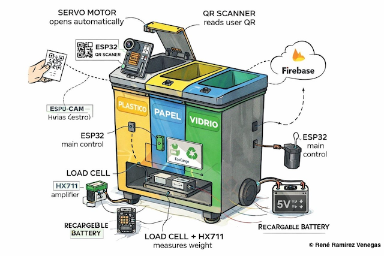

¿Por qué EcoCanje en Jalisco?
En el estado de Jalisco se generan más de 8,000 toneladas de residuos diariamente, de las cuales menos del 12% se recicla de manera adecuada. La gran mayoría termina en rellenos sanitarios o sin un tratamiento correcto.
*Datos aproximados basados en fuentes oficiales y estudios ambientales en México.
EcoCanje Jalisco nace como una solución práctica que utiliza la tecnología móvil para:
- ✓ Enseñar a clasificar correctamente los residuos
- ✓ Incentivar el reciclaje con puntos canjeables
- ✓ Crear una comunidad comprometida con el medio ambiente
- ✓ Conectar ciudadanía, gobierno estatal y comercios locales
*Datos aproximados basados en fuentes oficiales y estudios ambientales en México.
Tasa actual de reciclaje estimada
Meta estatal a 3 años
Objetivos del Proyecto
🎯 General
Implementar una app estatal que reconozca al usuario mediante el escaneo de un QR y le otorgue puntos por reciclar.
📊 Reducción
Disminuir los residuos mal clasificados en un 10% durante el primer año en el Área Metropolitana de Guadalajara.
🏪 Puntos
Se usaría un sistema de puntos, mediante el cual, se canjearia por dinero usando la tarjeta naranja o donación a la Croz Roja, a Reforestar Jalisco o el Hogar Cabañas; implementada por el gobierno de Jalisco, un ejemplo serían 50pts = 5 pesos mexicanos.
🌱 Conciencia
Crear conciencia ambiental mediante gamificación y estadísticas personalizadas para la población jalisciense.
La Aplicación
Funcionalidades principales
Verifica al usuario y le asigna los puntos correspondientes al reciclar.
Módulo inteligente, calcula la cantidad de residuos y usa un código interno para transformar los kilogramos en puntos, coordinado con python y Realtime para precisión y velocidad a la hora de editar los puntos del usuario en una Base de Datos.
Ubica centros de acopio cercanos en Jalisco.
Sistema de canje de puntos para obetener recompensas.
Muestra historial, logros y motivación mediante gamificación.
Flujo de uso diario
Descarga gratuita, registro con correo válido y verificar cuenta
Abrir app, escanear QR, escoger el tipo de residuo
Depositar residuos en el centro de acopio, seguir indicaciones, recibir puntos.
Residuos
| Categoría | Subcategorías | Contenedor |
|---|---|---|
| Plástico | PET, HDPE, PVC, LDPE | Amarillo |
| Vidrio | Botellas, frascos, envases | Verde |
| Papel/Cartón | Periódico, cajas, folletos | Azul |
Tabla de conversión de puntos
| Material | Puntos por kg |
|---|---|
| Papel/Cartón | 15 puntos |
| Plástico PET | 50 puntos |
| Vidrio | 8 puntos |
10 puntos = $1 MXN. Mínimo para canjear: 50 puntos. Vigencia: 6 meses.
Tecnología y Materiales del Sistema
Para el funcionamiento del contenedor inteligente de EcoCanje se utilizan componentes electrónicos accesibles y de bajo costo que permiten identificar usuarios, medir residuos y registrar puntos automáticamente.
📷 Escáner de Usuario
- Módulo ESP32-CAM con cámara
- Lectura de códigos QR
- Conexión WiFi al sistema
⚖️ Sistema de Pesaje
- Celda de carga (Load Cell)
- Amplificador HX711
- Medición automática del peso del residuo
🧠 Controlador Principal
- Microcontrolador ESP32
- Procesamiento de datos
- Cálculo de puntos por material
🚪 Sistema de Apertura
- Servo motor
- Apertura del contenedor al presionar un pulsador
- Control según tipo de residuo
📡 Conectividad
- Conexión WiFi integrada
- Comunicación con base de datos en la nube
- Registro en tiempo real
🔋 Alimentación
- Fuente de 5V / 2A
- Regulador de voltaje
- Opcional: batería de respaldo
Costo estimado por contenedor
| Componente | Costo aproximado |
|---|---|
| ESP32-CAM | $300 MXN |
| ESP32-WROOM | $250 MXN |
| Amplificador HX711 | $125 MXN |
| Pulsadores, Cables, Servos | $400 MXN |
| Fuente de alimentación | $200 MXN |
| Estructura del contenedor | $1200 MXN |
Costo total estimado por contenedor inteligente: $2500 MXN aproximadamente dependiendo del diseño.

Modelo de Alianzas en Jalisco
🏛️ Gobierno del Estado de Jalisco
Responsabilidades:
- Instalar centros de acopio en escuelas
- Subsidiar recompensas
- Promocionar la app a nivel estatal
Beneficios:
- Menor costo de disposición final
- Mayor vida útil de rellenos sanitarios
- Participación ciudadana activa
💳 Tarjeta Naranja o Mi Movilidad
Rol en EcoCanje:
- Provee la infraestructura financiera para depositar las recompensas.
- Actúa como el "banco" del sistema de reciclaje.
- Garantiza la transferencia instantánea y segura de dinero a los usuarios.
Ejemplo del Ciclo de Recompensa
| Material Reciclado | Cantidad | Puntos EcoCanje | Dinero en Tarjeta Naranja |
|---|---|---|---|
| Vidrio | 3 kg | 24 | No aplica (mínimo no alcanzado) |
| Plástico PET | 5 kg | 250 | $25 MXN |
| Papel/Cartón | 10 kg | 150 | $15 MXN |
| Acumulado total | - | 424 puntos | ¡$40 MXN depositados! (Ejemplo con tasa 10 pts = $1)* |
Plan de Implementación en Jalisco
Fase 1: Prototipo
4 meses
- Desarrollo del Modelo
- Pruebas en escuelas de la Secretaría de Educación y UDG
- Ajustes y correcciones
- Aplicaciones para IOS y Android
Fase 2: Piloto
6 meses
- 10 centros de acopio en Guadalajara, Zapopan y Tlaquepaque
- Campaña en colonias urbanas
- 2,000 usuarios registrados
Fase 3: Expansión
12 meses
- Cobertura en el Área Metropolitana de Guadalajara
- 10,000 usuarios activos
- Página Web Funcional
Fase 4: Consolidación
Continuo
- Expansión a municipios del interior del estado
- 50,000+ usuarios
- Mantenimiento continuo
Reto STEAM Jalisco 2026
Asesora: Emilia Llamas Guerrero
Equipo:
René Ramírez Venegas
Flor Ochoa Morales
Adriana Valeria Rodriguez Barbosa